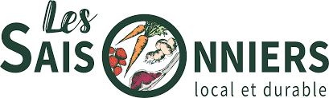

Margaux, Thomas and Adrien are all three passionate about agriculture and food. They created "Les Saisonniers" with the ambition to recreate the link between Paris and its countryside, between consumers and their farmer neighbors.
They offer seasonal products, from organic or sustainable agriculture and grown less than 2 hours from Paris: fruits, vegetables, meat, dairy products, eggs, wines, beers, juices, fresh herbs, bread and even Christmas trees! You can also find uncalibrated or "ugly" products, refused by restaurants or supermarkets, and sold at low prices.
